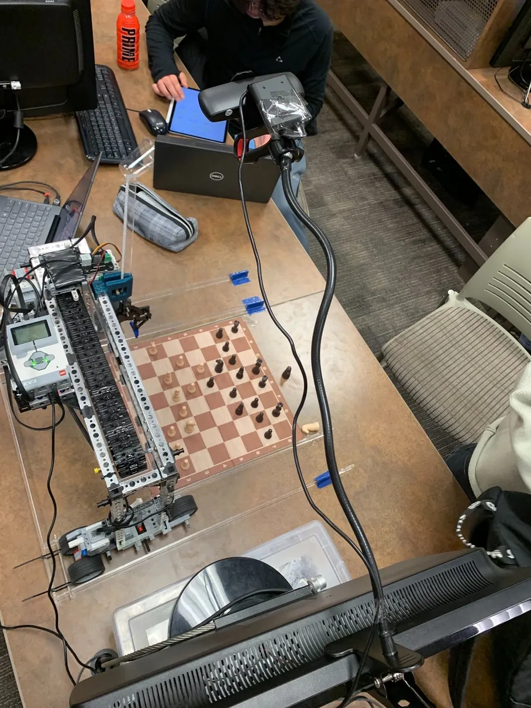
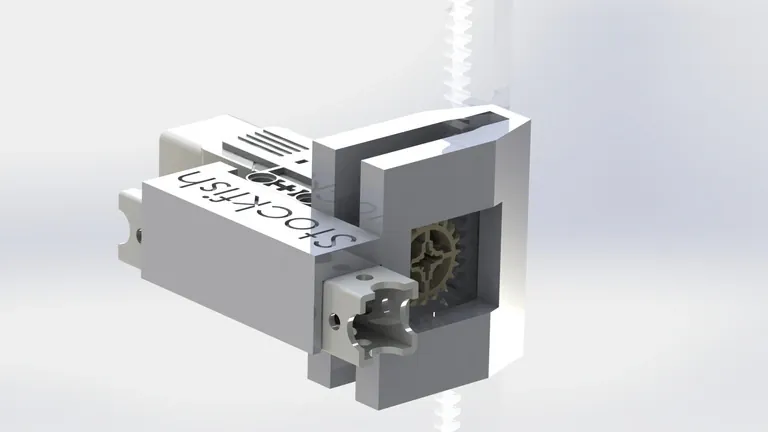

Course project · 2023
Autonomous chess robot
A robot that sees its opponent's move and plays back on a real board. I led the team of four.
- My role
- Team lead, team of 4
- When
- Jan to Apr 2023, ME 101
- Tools
- SOLIDWORKS, AutoCAD, Python, OpenCV, RobotC, EV3
- 95%+
- moves made correctly
- 95%+
- opponent moves read correctly
- 0
- games lost

What it is
I led a team of four building a robot that plays a full game of chess against a person with no help. A camera and OpenCV pick up the opponent's move, the Stockfish engine chooses a reply, and Python sends instructions to an EV3 brick running RobotC, which drives a 3-axis gantry with a gripper to move the piece.
How we built it
- Built the gantry from belts, racks and pinions, wheels, LEGO and Tetrix parts, plus housings, racks and guides I modelled in SOLIDWORKS and AutoCAD and then 3D printed or laser cut.
- Ran SOLIDWORKS FEA to choose a structure that spread the load and wouldn't tip.
- Planned the term with a work breakdown structure and Gantt chart, and finished on schedule.




Results
- Moved pieces correctly more than 95% of the time.
- Read the opponent's move correctly more than 95% of the time.
- Never lost a game, with a theoretical rating of 3620 Elo.